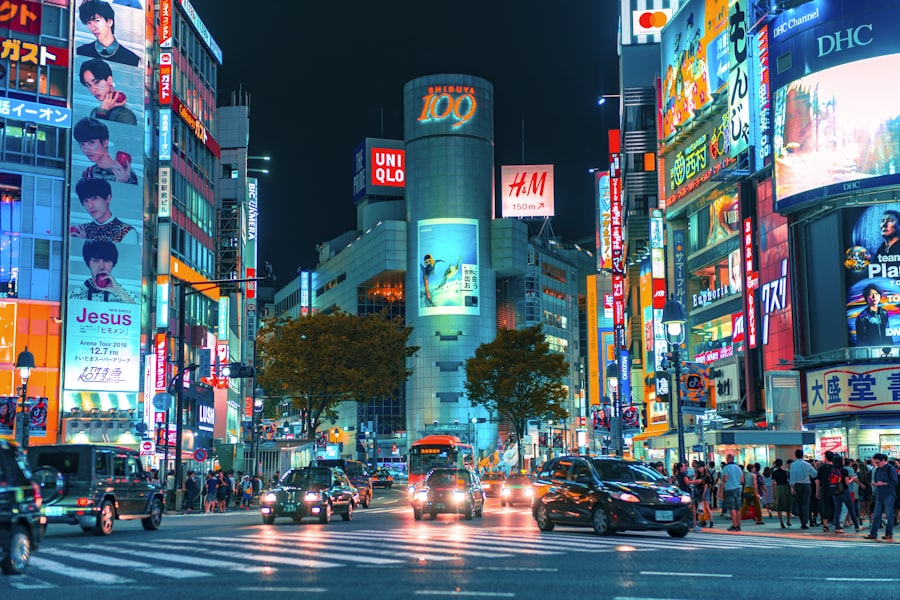

간토 · 도쿄
간토 (도쿄)
메이저 관광지를 벗어난 동네 단위의 로컬 정보.
이 지역 스팟 둘러보기
소지역과 카테고리를 선택하면 실제로 가볼 만한 곳/먹을 곳이 바로 아래에 나옵니다.
🗺️ 시모키타자와
-
시로히게 슈크림 공방(白髭シュークリーム工房)
스튜디오 지브리 공식 인증, 미야자키 하야오 감독의 동생이 운영. 토토로 모티브 슈크림(9종 이상) 판매. 역에서 도보 8분, 10:30~19:00(화 휴무).
-
Kindal(킨달)
전국 30여 지점을 둔 일본 대표 명품 빈티지숍 체인 중 하나, 시모키타자와점 존재.
-
CIRCULABLE SUPPLY 시모키타자와점
2025년 4월 오픈, 역에서 도보 5분 거리의 신생 빈티지숍.
매년 10월 카레 페스티벌에 100여 개 카레 음식점이 참여할 만큼 카레 전문점이 밀집한 "카레거리"도 유명하지만, 개별 상호명은 아직 특정하지 못해 추가 확인 후 반영할 예정입니다.
조건에 맞는 스팟이 아직 없습니다. 다른 필터를 선택해 보세요.